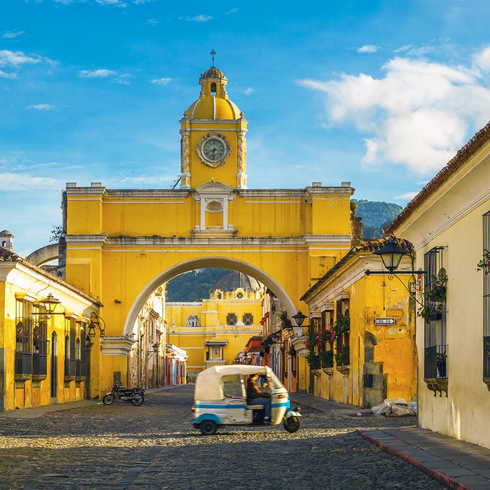

LUGARES TURISTICOS DE GUATEMALA
1. Flores, Petén
2. Tikal, Petén
3. Río Dulce, Izabal
4. Livingston, Izabal
5. Quiriguá, Izabal
6. Cobán, Alta Verapaz
7. Lanquín y Semuc Champey, Alta Verapaz
8. Nebaj y Chajul, Quiché
9. Todos Santos Cuchumatán, Huehuetenango
10. Xela, Quetzaltenango
11. Quetzaltenango
12. Chichicastenango, Quiché
13. Lago de Atitlán, Sololá
14. Antigua Guatemala
15. Ciudad de Guatemala
